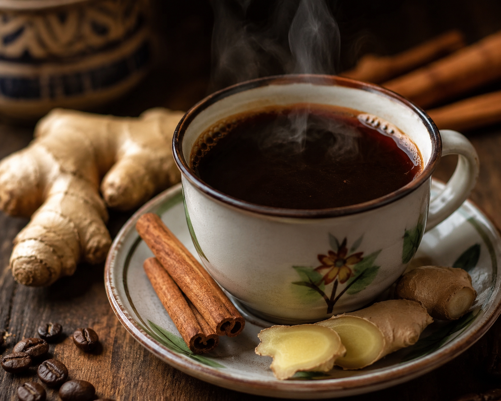
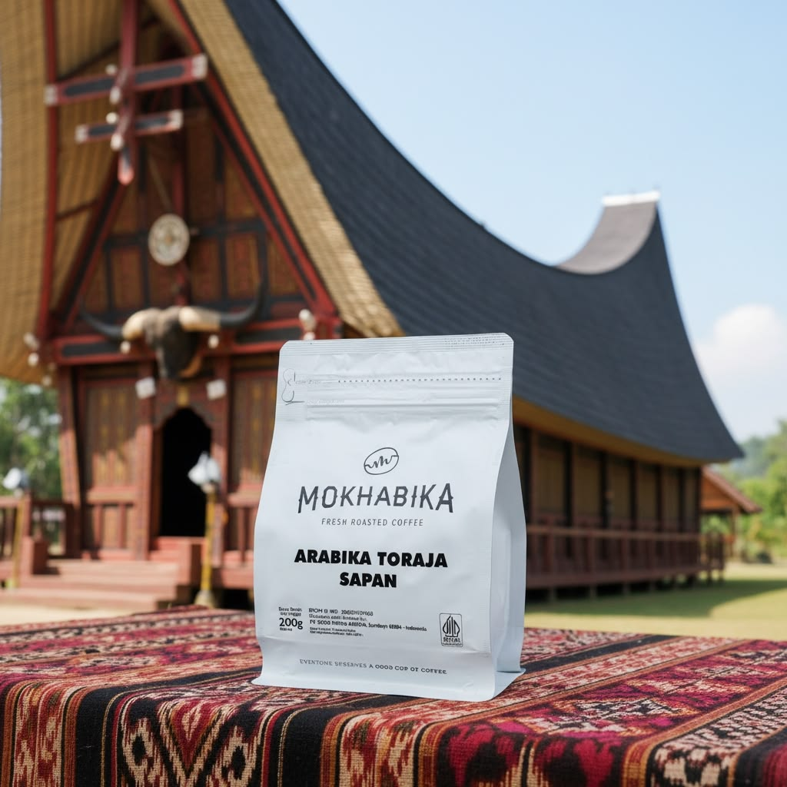
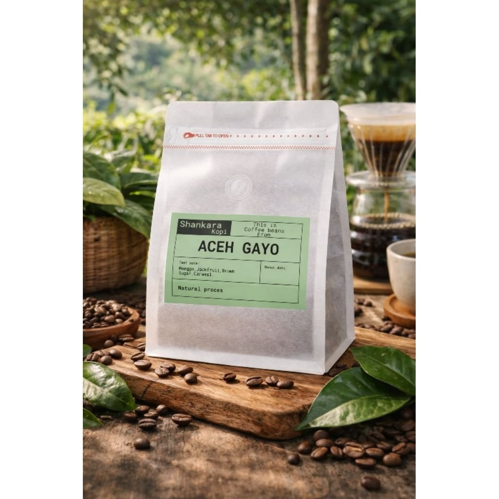
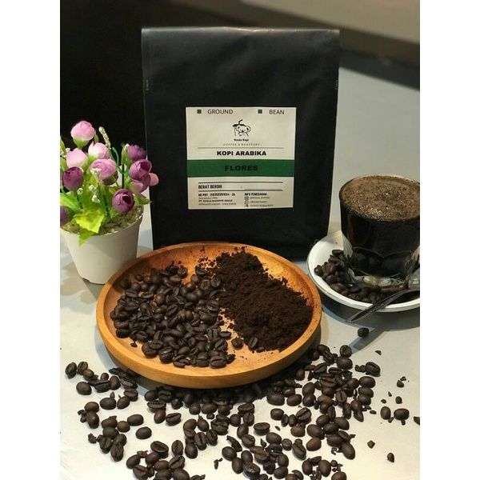

Specialty Coffee · Ternate, Maluku Utara
Kopi asli Maluku Utara dengan perpaduan jahe dan kayu manis — cita rasa yang pekat, aroma yang khas, dan identitas yang harus dijaga.




Filosofi Kami
Kami percaya bahwa secangkir kopi yang baik dimulai jauh sebelum proses roasting. Hubungan langsung dengan petani, metode pemrosesan yang tepat, dan rasa hormat terhadap terroir — itulah yang membedakan KŌTER.
Pelajari Lebih LanjutKoleksi Kami
12 Single Origin · 3 Blends · Freshly Roasted
Tentang KŌTER
Lahir dari cinta terhadap kopi asli Maluku Utara, KŌTER hadir untuk melestarikan cita rasa yang kaya dan memperkenalkannya kepada dunia.
Kisah Kami
KŌTER didirikan di jantung kota Ternate, Maluku Utara — sebuah kota bersejarah yang kaya akan rempah dan budaya. Kami percaya bahwa biji kopi asli Maluku Utara menyimpan karakter yang luar biasa: warna yang pekat, rasa yang dalam, dan aroma yang tak tertandingi.
Lebih dari sekadar bisnis kopi, KŌTER adalah sebuah gerakan pelestarian. Kami hadir untuk memastikan bahwa kopi Maluku Utara tidak hanya dikenal di tanah sendiri, tetapi diwariskan kepada generasi yang akan datang sebagai identitas dan kebanggaan daerah.
Yang membuat kopi kami istimewa adalah perpaduan sempurna antara biji kopi lokal dengan rempah-rempah pilihan — jahe dan kayu manis — menciptakan cita rasa dan aroma yang khas, hangat, dan tak terlupakan. Inilah warna baru yang kami tawarkan kepada dunia kopi Indonesia.
Kopi Maluku Utara harus dijaga dan diwariskan pada generasi selanjutnya sehingga menjadi identitas kita.
Kami hadir untuk memberikan warna baru sekaligus menjaga budaya kopi asli Maluku Utara.
Sang Penggagas
Saya Achat Rusli & Partner adalah penggagas di balik KŌTER — sebuah usaha bersama yang lahir dari semangat kolektif bersama para partner dan teman-teman yang memiliki mimpi yang sama: mengangkat kopi Maluku Utara ke panggung yang lebih luas.
Bersama timnya, Achat membangun KŌTER bukan hanya sebagai toko kopi, tetapi sebagai ruang di mana tradisi bertemu inovasi. Setiap cangkir yang disajikan adalah cerminan dari dedikasi mereka terhadap kualitas, keaslian, dan warisan budaya lokal.
KŌTER adalah bukti bahwa usaha yang dibangun dengan hati dan dilakukan bersama-sama mampu membawa perubahan nyata bagi komunitas dan budaya daerah.
Nilai Kami
Kami Ada Untukmu
Terima kasih sudah menghubungi kami.
Kami akan membalas dalam 1×24 jam.